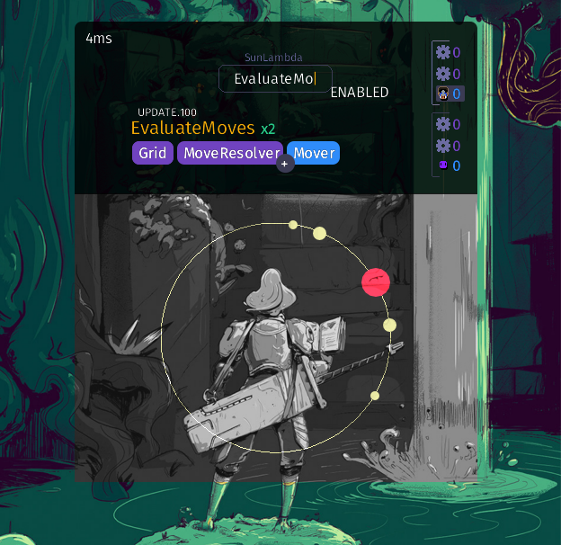
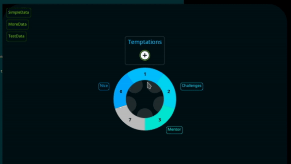
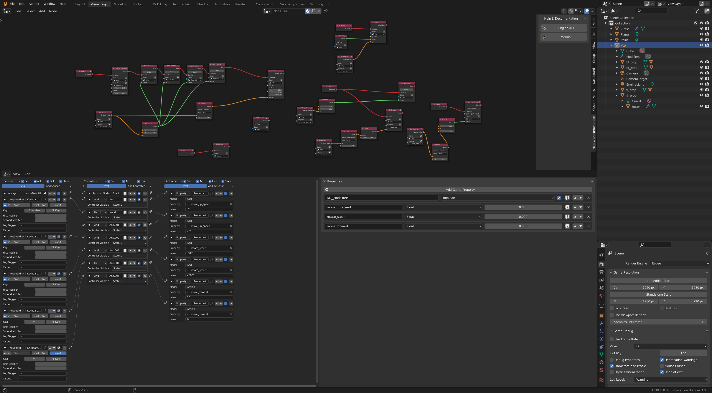
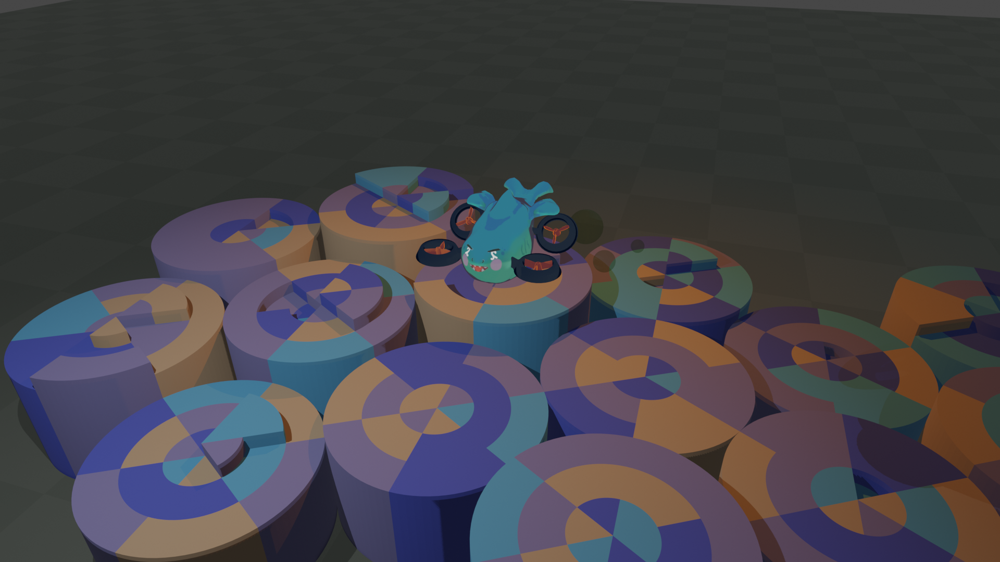
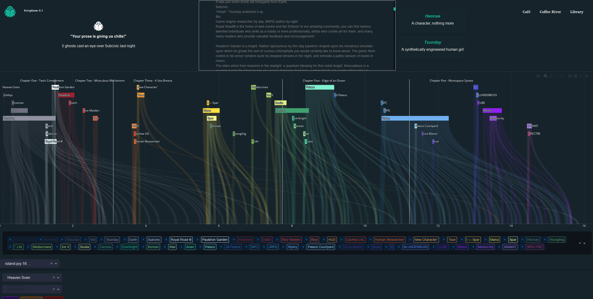

future literate
Future Literate began with a prototype game framework that I programmed called Bicycle Mango. It is essentially an ECS without entities plus some nice features like system hot reloading.
I only ever finished one game using the engine: Friend Limit
github ludum dare entry
I wanted to engineer a game engine for contextual intent expression embedded within games, that could be interacted with through drag and drop symbols or natural language in a scalable way.
In many ways, I was inspired by the pleasant and productive no-code interface of the first game engine I ever used, Stencyl, but I needed something more performant and flexible.
Eventually, I realized how difficult it would be to maintain and improve this framework in parallel with development of an indie game. Thus I adopted flecs and started building a game engine around that instead.
I developed an open source clone of PureRef using flecs called Gui Gal, I integrated Stable Diffusion and Whisper directly into the tooling by embedding Python in C.
Additionally, I prototyped concepts for a system-first game engine interface using Python.
I call this interactive primitive a system compressor: a design based on the children's game hopscotch for ordering, querying, and modifying gameplay logic systems. By limiting the number of visible systems to the number of objects which can be held in a programmers short-term memory, it empowers focus and clarity.
A few of my functional requirements for the engine include
- Fast understanding and manipulation of global ordering for all observers/systems/intervals in a game (ten thousand as a benchmark for a mid sized project)
- Effortless visual understanding of query outcomes: to see the systems matched with static analysis
- Fast iteration (hot reload of individual system code, and updates to entities/component data layouts while live)
- Linguistic and visual marry conduit (ie integration between conceptual and implementation workflows)
I also researched agent based immersive natural language game engine interface design.

After programming this prototype, I diverged my efforts into three distinct areas of the engine's development.
-
Creating a 'film game' (Dronthropocene) in UPBGE
 Hypothesis: content creation tools will eventually be seamlessly integrated into engines. I wanted to experience the process of using Blender to make a game. I considered integrating Future Literate into Blender's front end, but the Eevee renderer was not efficient at realtime rendering of large number of objects, making this untenable.
-
VPT/MineRL, using VPT/RL to train AI agents for gameplay and to automate engine UI game development tasks.
-
LitRPG GPT-3 fine tuning for pyclang/davinci-codex
Research on history of LitRPGs (ie reading 1/2 Prince, The Legendary Moonlight Sculptor, etc), what tools Royal Road writers use, and how to extract and codegen game mechanics from a LitRPG. For example, taking a Level Up text sheet and converting it to Flecs components and systems for LLM constraints.
I pursued development an IDE for writing LitRPGs that could automatically generate video game systems from natural language descriptions with the goal to generate a video game from any book and provide a creative feedback system where 'ghosts' would write you feedback in the night about what you had written.
This first attempt at an IDE for book simulation and reading was called Ghost Corpus: and it was simply a horizontal sankey timeline for querying named entity references in books.

My development of Future Literate is ongoing, currently I am implementing the prototype interface in C with GPT-4 to create Book Simulator Online